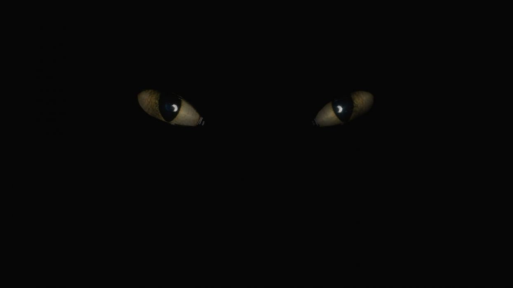

Miksi? Se on validi kysymys. Lapsuuden pelottavat tv-hahmot viehättävät näin aikuisiällä, koska ymmärrämme ne moniulotteisemmin, kuin lapsena. Huomaamme, että hahmoissa on paljon enemmän, kuin mitä luulimme heissä olevan. Joillekin uudelleen tutustuminen hahmoihin ja niihin liittyviin faktoihin voi helpottaa lapsuudessa kehittyneeseen pelkoon ja sen tuomiin mielikuviin. Jos koet vahvoja pelkotiloja, suosittelemme sulkemaan sivuston välittömästi.
Jos et ole varma, tutustu rauhassa sivuston hahmoihin ja palaa sitten antamaan äänesi!